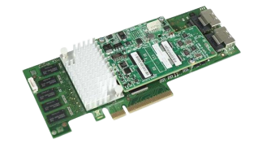

¿Que es un controlador?
En el sentido más fundamental, un controlador es un componente de
software que permite al sistema operativo y un dispositivo comunicarse
entre sí. Por ejemplo, supongamos que una aplicación debe leer algunos
datos de un dispositivo. La aplicación llama a una función
implementada por el sistema operativo y el sistema operativo llama a
una función implementada por el controlador. El controlador, escrito
por la misma empresa que diseñó y fabricó el dispositivo, sabe cómo
comunicarse con el hardware del dispositivo para obtener los datos.
Una vez que el controlador obtiene los datos del dispositivo, devuelve
los datos al sistema operativo, que lo devuelve a la aplicación.

No todos los controladores deben ser escritos por la empresa que
diseñó el dispositivo. En muchos casos, un dispositivo está diseñado
según un estándar de hardware publicado. Por lo tanto, Microsoft puede
escribir el controlador y el diseñador de dispositivos no tiene que
proporcionar un controlador.
No todos los controladores se comunican directamente con un
dispositivo. Para una solicitud de E/S determinada (como leer datos de
un dispositivo), a menudo hay varios controladores superpuestos en una
pila de controladores que participan en la solicitud. La forma
convencional de visualizar la pila es con el primer participante en la
parte superior y el último participante de la parte inferior, como se
muestra en este diagrama. Algunos de los controladores de la pila
pueden participar mediante la transformación de la solicitud de un
formato a otro. Estos controladores no se comunican directamente con
el dispositivo; simplemente manipulan la solicitud y pasan la
solicitud a los controladores que están más bajos en la pila.

Controlador de función: el controlador de la pila que se comunica
directamente con el dispositivo se denomina controlador de función.
Controlador de filtro: los controladores que realizan el procesamiento
auxiliar se denominan controladores de filtro.
Algunos controladores de filtro observan y registran información sobre
las solicitudes de E/S, pero no participan activamente en ellas. Por
ejemplo, algunos controladores de filtro actúan como comprobadores
para asegurarse de que los demás controladores de la pila controlan
correctamente la solicitud de E/S.
Podríamos ampliar nuestra definición de controlador diciendo que un
controlador es cualquier componente de software que observe o
participe en la comunicación entre el sistema operativo y un
dispositivo.
Controlador RAID
Un controlador RAID es una tarjeta o chip ubicado entre el sistema
operativo y una unidad de almacenamiento (generalmente un disco duro).

¿Qué hace un controlador RAID?
Virtualiza las unidades en diferentes grupos con características
específicas de protección de datos y redundancia. La interfaz
front-end normalmente se comunica con el servidor a través de un
adaptador basado en host (HBA). El backend se comunica con el medio de
almacenamiento subyacente y lo administra; generalmente es ATA, SCSI,
SATA, SAS o Fibre Channel.
Los controladores RAID se clasifican por las múltiples características
que incluyen tipos de unidades (como SATA o SAS), niveles RAID
específicos y el número de puertos y unidades compatibles. El
controlador RAID no es un controlador de almacenamiento. El
controlador de almacenamiento proporciona el disco activo al sistema,
mientras que el controlador RAID actúa como caché de RAM y proporciona
funciones RAID.
Controladores RAID de hardware VS software
-
Basado en hardware: Los controladores RAID de hardware son
dispositivos dedicados diseñados para gestionar las configuraciones
RAID de un conjunto de discos. Existen dos variantes principales:
tarjetas controladoras RAID y RAID en chip interno.
-
Tarjetas controladoras RAID: Son dispositivos físicos que se
insertan en las ranuras PCIe o PCI-X de una placa base. Estas
tarjetas incorporan su propio procesador RAID y procesador de E/S
con interfaz de unidad independiente, lo que les permite administrar
y controlar completamente los discos conectados.
-
RAID en chip: Esta opción más económica implica la integración de un
chip RAID en la placa base. Este chip único incluye una interfaz de
host, una interfaz de E/S para los discos duros, un procesador RAID
y un controlador de memoria.
-
Basado en software: Los controladores RAID de software operan desde
el sistema host en lugar de un dispositivo físico independiente
-
RAID solo de software: Este enfoque utiliza las funciones RAID
nativas del sistema operativo anfitrión y se considera la opción más
económica. El cálculo de RAID y la gestión de discos se realizan a
través de la aplicación basada en el host,utilizando controladores
nativos de host bus adapter (HBA) o interfaces de E/S para
comunicarse con las unidades de almacenamiento.
-
RAID híbrido de hardware/software: Este enfoque combina las funciones de BIOS
RAID proporcionadas por la placa base o un HBA con un componente de hardware
adicional. Esta tecnología híbrida agrega una capa adicional de administración y,
aunque aumenta el costo en comparación con el RAID solo de software, ofrece
protección contra errores de inicio del sistema operativo.
Diferentes niveles RAID
-
RAID 0 (Striping): Este nivel divide los datos en dos o más discos, lo que mejora
significativamente el rendimiento. Sin embargo, no proporciona redundancia, lo que
significa que si un disco falla, se pierden todos los datos.
-
RAID 1 (Duplicación): RAID 1 utiliza dos o más discos para duplicar los datos, lo
que proporciona una copia exacta en cada disco. Esta duplicación ofrece redundancia
de datos y conmutación por error si uno de los discos falla.
-
RAID 5/6 (Striping con paridad/doble paridad): Estos niveles combinan el
rendimiento de RAID 0 con la redundancia de RAID 1. Utilizan paridad (o doble paridad
en RAID 6) para proteger los datos. Estos niveles son eficaces y eficientes en cuanto a
capacidad.
-
RAID 10 (Striping y Mirroring): RAID 10 es una combinación de RAID 0 y RAID 1.
Los datos se dividen en dos discos y se espejan en otros dos. Esto proporciona un alto
rendimiento y redundancia, aunque es más costoso en términos de almacenamiento.